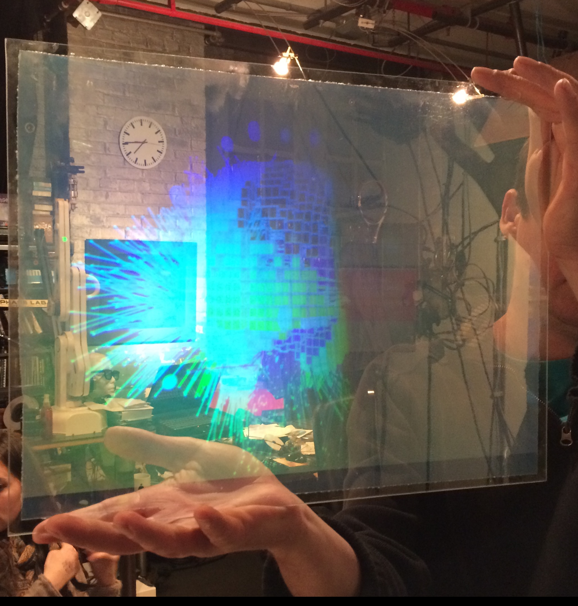

Unlike conventional holography, where a master hologram is produced and then copied into the final hologram, state-of-the-art holograms utilize a direct write technique. This involves printing hogels (holographic pixels) directly onto the finished hologram. This has significant advantages over conventional holography. Each hogel possesses density (i.e. RGB colour) information as well as phase information. It is common to have almost a half million hogels in a poster sized hologram. Large mural-sized holograms have been demonstrated.
Please call to book your appointment. At the appointment you will attend a in which your session brain activity will be recorded using existing recording software from Cerebral Diagnostics.
Brain activity will be recorded using existing recording software from Cerebral Diagnostics. This is already fully functional. The recording session is a very special experience because while the cap is on your head you will see your own brain at work live, with 3-D brain images appearing instantly on the screen.
A customer will be able to attend a recording session in which their brain activity will be recorded using existing recording software from Cerebral Diagnostics. This is already fully functional. This is done by placing an electrode cap on the subject and using commercially available amplifiers to record the voltages.
The brain is seen in dark blue divided into cubes called voxels. Green, red and turquoise lines are seen radiating out of the hologram form the center of the voxels. There are 6239 of them. The electrical currents in the brain occur in frequency bands. To depict them we colour coded them so that green, red and turquoise all represent different frequencies. The lines point in the direction of the currents. The image was taken with very fast shutter speed of 1/1024th of a second of activity. In life the lines move with incredible rapidity.
The length of the line is a depiction of how strong the electrical activity was for the voxel that the line is radiating from.
3D visualization is the fastest growing industry in the world and a 3D hologram can be thought of as 3D hard copy of an image. Digital Holography is at the top of 3D visualization techniques because it is autostereoscopic and does not require a computer to view. It also contains many of the visual cues to the brain that we receive when viewing real-world objects and scenes. The hologram seen here is of a response to stimuli in brain recorded using the Artful Player software and then recorded holographically.
Brain Imaging System Developer, Researcher
OCAD University Professor
Researcher, Programmer
Holographic Printing, 3D Printing
Holographic Printing, Videographer
Researcher, Photographer, 3D
Computer Engineering student, Researcher
Artist
We're located at 691 Queen St. East, Toronto near Broadview.